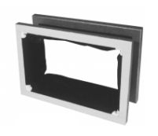
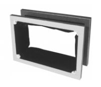Elektrický ventilátor je zařízení, sloužící ke stlačování vzduchu a jeho čerpání do zásobníku, ze kterého jsou pak napájeny všechny spotřebiče vzduchu ve varhanách. V principu nahrazuje funkci čerpacího měchu a kalkanta (jeho obsluhy) současně. Ventilátor je soudobým varhanářstvím používán jak u nových nástrojů, tak i při modernizaci nástrojů historických. V obou případech se dále používají i čerpací měchy (u historických nástrojů se zachovávají původní, u nových se často používá čerpací měch se zásobníkem – dvojitý měch- jako hlavní zásobník vzduchu). Čerpací měch pak lze použít jako havarijní zdroj stlačeného vzduchu v případě poruchy ventilátoru nebo výpadku elektrické napájecí sítě, u historických nástrojů se používá čerpací měch i v případě, chceme-li provozovat hudbu v autentických (historických) podmínkách. I při použití ventilátoru se ve varhanách neobejdeme bez měchu, sám ventilátor není schopen dodat potřebné množství vzduchu o stálém tlaku v celém rozsahu možných odběrů (množství spotřebovaného vzduchu kolísá podle počtu zapnutých rejstříků a hrajících píšťal v tom kterém okamžiku, pohybuje se tak od nuly v pauze hry až po maximum při akordické hře v plénu či tutti). Tlak musí být velmi stabilní, jinak se nástroj rozlaďuje a kolísání tlaku má vliv i na intonaci. Žádný způsob regulace tlaku přímo na ventilátoru (např. regulace otáček či škrcení sacího nebo výtlačného otvoru) není pro tento účel dostatečně vhodný, neboť není schopen zajistit jeho stabilizaci za všech okolností s dostatečnou rychlostí. Tlak vzduchu, dodávaného ventilátorem je navíc proměnný a závislý na velikosti odběru (při nízkém odběru stoupá, při vysokém naopak klesá). U použitého měchu je v tomto případě nutná jen funkce rezervoáru – zásobníku (tuto funkci plní např. horní část čerpacího měchu se zásobníkem, samotný čerpací měch je pro akumulační funkci nepotřebný). Nové nástroje (a především větší) proto používají přímé spojení ventilátoru se samostatným zásobníkem (bez čerpacího měchu). Ten je tvořen nejčastěji vodorovným nebo plovákovým měchem. Základem ventilátoru je oběžné kolo s lopatkami, otáčející se uvnitř komory - spirální skříně, která jej těsně obklopuje. Oběžné kolo je roztáčeno elektromotorem. Vnější vzhled ventilátoru přibližuje následující fotografie z katalogu: |
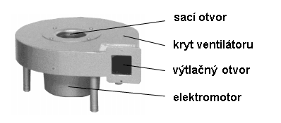
Jedná se o ventilátor se svislou osou, který není vybaven žádnými dodatečnými prvky (např. filtry na vstupu či klapkou na výstupu). Rotor ventilátoru (oběžné kolo) je nasazen na hřídeli poháněcího motoru a je tvořen dvojicí kotoučů, mezi kterými jsou po obvodu připevněny lopatky: Těch je zpravidla několik desítek a jejich tvar a úhel naklopení vůči ose otáčení určuje základní vlastnosti ventilátoru, především účinnost a hlučnost. Ventilátory tohoto typu pracují na odstředivém principu – roztočením vzduchu uvnitř komory rotoru dojde k jeho vytlačování díky působení odstředivé síly na částice vzduchu. U středu oběžného kola se tak vzduch zředí a po obvodu stlačí. Spirální komora, ve které se rotor otáčí je vytvarována tak, že umožňuje přivádět ke středu rotoru sacím otvorem vzduch z okolí a stlačený vzduch z obvodu kola vytlačit do výstupního – výfukového otvoru (do zásobníku a dále ke spotřebičům…). Její tvar by se měl co nejvíce blížit logaritmické spirále. Vstupní (sací) otvor je většinou opatřen filtrem, který čistí nasávaný vzduch od prachových částic a současně částečně tlumí hluk. 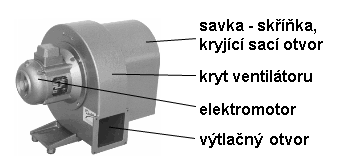Časté je i provedení ventilátoru s vodorovnou osou, na obrázku je vidět i savku – skříňku či kapsu, nasazenou na sací otvor a opatřenou filtrem. |
Rotor musí být velmi důkladně vyvážen (každá nevývaha
by při otáčení byla zdrojem vibrací, které by se přenášely do okolních
konstrukcí a způsobovaly by hluk, navíc by vznikající cyklické síly zbytečně
zvyšovaly opotřebení ložisek motoru a snižovaly spolehlivost ventilátoru).
Jako motor se používá nejčastěji asynchronní třífázový elektromotor s
klecovým rotorem. Jeho elektrické parametry se přizpůsobují síti v místě
použití, často se musí doplnit o stupňové spouštění (přepínání hvězda
– trojúhelník nebo Soft-Startér) tam, kde je síť příliš měkká (rozběh
většího ventilátoru trvá i deset sekund, během kterých motor odebírá až
šestinásobek proudu a síť by mohla být neúměrně přetížená). Konstrukce
motoru je mírně odlišná od motorů pro běžné použití z důvodu minimalizace
hluku a vibrací (větší zešikmení drážek a jiné rozložení vinutí pro omezení
prostorových harmonických elektromagnetického pole, kluzná ložiska…).
Technologie výroby je poměrně náročná na přesnost a zvládá ji v současnosti
jen několik málo firem, které dodávají ventilátory pro všechny varhany
(Ventola, Ventus, u nás dříve Rieger). V jejich katalozích najdeme množství
konstrukčních provedení ventilátorů se svislou i vodorovnou osou, které
jsou pak dodávány v několika ucelených výkonových řadách, lišících se
množstvím dodávaného vzduchu a jeho tlakem: |
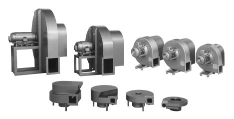
Tvar spirální skříně ventilátoru se může lišit i díky různému umístění výstupního (výfukového) otvoru: 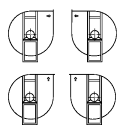Různé tvarové varianty ventilátoru téhož typu a parametrů jsou výrobci nabízeny především z důvodu snazšího použití ve varhanách z pohledu přizpůsobení prostorového a konstrukčního uspořádání navazujících součástí vzduchového hospodářství v podmínkách konkrétního nástroje. Proto je nabídka provedení ventilátorů velmi široká. Rozdíly nejsou jen v konstrukci a výkonu (tlak a průtok), vybrat lze i způsob napájení (jednofázový či třífázový elektromotor) a úroveň hluku (menší u dražších ventilátorů, které budou zabudovány přímo do nástroje či v poslechovém prostoru, větší pro levnější ventilátory v oddělené kalkovně). Hluk ventilátoru má dvojí původ - mechanický, vznikajicí od vibrujících součástí ventilátoru (např. vlivem nevyvážených rotujících hmot, rezonujících částí krytu apod.) a aerodynamický, vznikající při proudění vzduchu uvnitř konstrukce ventilátoru a jeho příslušenství. Aerodynamický hluk lze snížit jen vhodným návrhem tvaru všech součástí (především oběžného kola (lopatek) a spirální skříně. I u dobře navrženého ventilátoru lze ale např. nevhodně tvarovanými kanály pro přívod či odvod vzduchu vyvolat rezonanční poměry, ve kterých i drobné změny tlaku a turbulence při proudění mohou vést k rozkmitání vduchových hmot a zvýšení hlučnosti vzduchové soustavy. Úroveň mechanického hluku je závislá na přesnosti a preciznosti výroby jednotlivých součástí, vyvážení rotujících částí a taky na úrovni obsluhy (údržby - např. nevhodné mazání může být příčinou zvýšeného opotřebení ložisek a zvýšení hluku stejně jako nevhodná montáž, při které se do ventilátoru přenášejí cizí síly, které jej deformují - např. těžký výtlačný kanál apod.). Hluk ventilátoru je limitujícím faktorem pro jeho použití v hudebním nástroji, často se proto ventilátory kromě výše uvedených konstrukčních úprav opatřují ještě protihlukovým krytem nebo se zavírají do odhlučněné skříňky: |
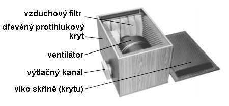
Uzavření ventilátoru do skříňky na jedné straně snižuje hluk, na druhé straně mírně zhoršuje parametry dodávaného vzduchu (snižuje o několik málo stupňů jeho tlak a mírně, díky zahřívání vzduchu ve skříňce od elektromotoru, zvyšuje jeho teplotu). V našich krajích se nejčastěji setkáte s varhanami, které byly elektrickým ventilátorem opatřeny dodatečně při elektrifikaci příslušné obce (nejčastěji ve čtyřicátých až padesátých letech minulého století). Výrobcem ventilátorů byla krnovská firma Rieger, která je zpravidla stavěla v blízkosti nástroje do odhlučňovací dřevěné skříňky, jejíž vzhled zachycuje následující fotografie: |
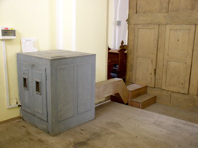 |
Vnitřní uspořádání je patrné z další fotografie.
Ventilátor má vodorovnou osu a otevřenou sací kapsu na vstupním otvoru,
filtry vstupního vzduchu jsou textilní a jsou zabudovány přímo do sacích
otvorů ve dvířkách skříňky: |
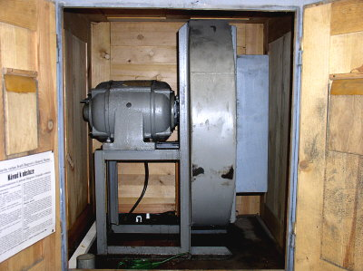 |
Součástí instalace ventilátoru byl i tento obsáhlý návod k obsluze a údržbě (po kliknutí jeho faksimile ve formátu *.pdf, tady pak jeho textová verze). |
Ventilátor je ke skříňce připevněn přes pružné silentbloky
(zpravidla gumové podušky či hranolky, které pohlcují vibrace a zabraňují
jejich přenesení do skříňky) a výtlačný kanál je připojen pomocí pružného
rukávu, který obdobně brání přenosu vibrací na vzduchovod a dále do konstrukce
varhan: |
| 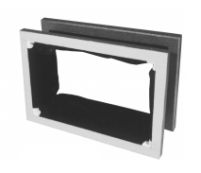 |
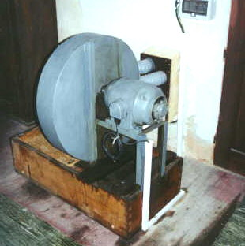Pokud je ventilátor umístěn v samostatné místnosti (z důvodu minimalizace hluku nebo proto, že pro něj u nástroje či v nástroji není místo), sání vzduchu by mělo být provedeno zpětným vzduchovodem ze skříně varhan. Jen tak je zajištěno, že nástroj nebude rozlaďován vzduchem s jinou teplotou a vlhkostí. Na fotografii je ventilátor (opět firmy Rieger), připojený ke vzduchovodům, tvořeným pružnými hadicemi. |
Stejně jako při spojení čerpací měch – zásobník i při spojení ventilátor – zásobník se při hře objevuje další technický problém – silně proměnná spotřeba vzduchu. Kalkant na proměnnou spotřebu reagoval rychlejším či pomalejším čerpáním tak, aby udržel v měchu zásobu vzduchu v určitých mezích. Stejnou funkci, tj. udržení téměř konstantní zásoby vzduchu v měchu během hry zajišťuje u varhan s ventilátorem zařízení, plnící funkci regulátoru průtoku vzduchu z ventilátoru do měchu – regulační záklopka. Pokud bychom spojili ventilátor s měchem přímo, situace by byla podobná té, která již byla popsána v kapitole o čerpacím měchu se zásobníkem. Ventilátor čerpá vzduch do zásobníku, ten se postupně naplňuje. Výkon ventilátoru musí být zvolen tak, aby byl schopen zajistit dostatek vzduchu při akordické hře v plénu či tutti. Pokud se hraje jen na sólový rejstřík nebo je při hře pauza, přebytek vzduchu zásobní měch rychle přeplní. Pojistný ventil ve víku měchu se otevře, přebytečný vzduch volně uniká do okolí a jeho další čerpání je v tuto chvíli zbytečné. Tento stav je nežádoucí – pojistný ventil plní jen funkci pojistky proti roztržení měchu přebytkem vzduchu, vzduch unikající přes jeho malý otvor způsobuje značný hluk a tlak uvnitř měchu a tím i v celé soustavě kolísá (mírně stoupá nad normální pracovní hodnotu). Bylo by sice možné v tuto chvíli přestat čerpat vzduch tak, jak to dělá při manuálním plnění kalkant tj vypnout ventilátor ještě před přeplněním měchu a opět jej zapnout, když poklesne zásoba vzduchu pod určitou mez, v praxi je ale tento způsob regulace nepoužitelný. Setrvačnost ventilátoru by měla za následek příliš pomalou reakci na změny odběru a navíc neustálé zapínání a vypínání by silně zkracovalo jeho životnost a bylo by zdrojem dalšího hluku. Proto se regulační člen vkládá přímo do cesty vzduchu z ventilátoru do zásobníku a má podobu regulační skříňky (regulační záklopky). Pracuje na principu škrcení (zmenšování průřezu výstupního kanálu ventilátoru pomocí clony, zásuvky - šoupátka, žaluzií či roletky). Spojení ventilátoru, pružného rukávu, regulačního ventilu a zásobníkového měchu ukazuje následující obrázek. Čárkovanou čarou je znázorněna vazba regulátoru s víkem měchu, otevírání či přivírání škrtícího ventilu je odvozeno právě od pohybu tohoto víka: |
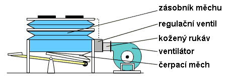
Na tomto i následujících obrazcích je ve funkci zásobníku použit zásobníkový měch (dvojice vodorovných měchů nad sebou), v praxi se často setkáme i s měchem plovákového typu. Regulační ventil se vyskytuje v několika konstrukčních variantách, princip funkce je ale vždy obdobný: |
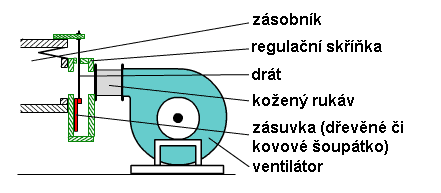
Nejjednodušší řešení představuje škrtící klapka v provedení s kovovou či dřevěnou zásuvkou (obdoba tabulového hradítka). Zásuvka se pohybuje ve svislém směru uvnitř tvarově upravené komory, vytvořené na vzduchovodu. O pohyb se stará drát, procházející těsně otvorem v horním víku regulační skříňky, který je spojený s víkem měchu. Na předchozím obrázku je řez touto soustavou s prázdným měchem (víko měchu v dolní poloze). Zásuvka je spuštěna do dolní polohy a průchodu vzduchu regulační skříňkou nic nebrání. Po zapnutí ventilátoru bude proudit vzduch vzduchovodem do měchu. V měchu stoupne tlak až k hodnotě, při které překoná tíhu závaží na víku měchu a začne jej zvedat, měch se bude plnit vzduchem. Současně s víkem měchu se přes tahací drát začne zvedat i zásuvka v regulátoru a postupně zmenšovat průřez kanálu pro proudění vzduchu z ventilátoru do měchu. V konečném důsledku se měch naplní tak, že víko v horní poloze regulační ventil zcela uzavře. Přestože ventilátor pracuje dále, vzduch do měchu proudit nemůže (přívod je zcela „zaškrcen“). Budeme-li vzduch z měchu odebírat, po čase dojde k poklesu jeho víka a škrtící ventil se opět pootevře, vzniklým otvorem může do měchu proudit vzduch a doplnit jeho množství o odebranou část. V ideálním případě se během hry na nástroj pohybuje víko měchu jen v malých mezích a regulační ventil je částečně pootevřen tak, že množství vzduchu, dodávaného přes takto vzniklý otvor právě nahrazuje v měchu vzduch, který je hrou spotřebováván. Při větší spotřebě (hra s více rejstříky nebo na plný stroj) se regulační ventil otevře více, při malé zase méně nebo se na čas úplně uzavře. Po celou dobu měch udržuje určitou zásobu vzduchu a co je důležité – jeho tlak je konstantní a na otevření regulační záklopky nezávislý. Propojení víka měchu s klapkou přes drát funguje jako zpětná vazba v regulované soustavě. |
Pro jednoduchost byl na předchozím obrázku vynechán
ještě jeden element v cestě vzduchu z ventilátoru do měchu, a tím je zpětný
ventil (záklopka). Tento ventil je nutný v případě, je-li měch vybaven
také čerpacím měchem a jeho umístění je patrné z následujících ilustrací: |
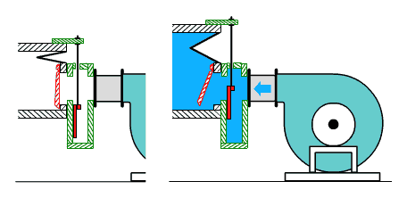
Zpětný ventil je umístěn hned za regulační záklopku
a umožňuje průchod vzduchu jen ve směru od ventilátoru do měchu. Brání
jednak úniku vzduchu z měchu po vypnutí ventilátoru přes ventilátor, jednak
umožňuje plnit zásobník manuálně pomocí čerpacího měchu kalkováním bez
nutnosti dalších úkonů. Pokud by tento ventil neexistoval, vzduch by při
manuálním čerpání z měchu unikal přes stojící ventilátor. Ventil není
nezbytný u varhan bez čerpacích měchů, často se však používá i proto,
aby zabránil působení zpětného tlaku na regulační ventil po vypnutí ventilátoru. |
Jiná, často používaná konstrukce regulačního ventilu, využívá k přivírání otvoru pro průchod vzduchu roletku (plát kůže, koženky či obdobného měkkého pružného materiálu), navinutou na válečku. 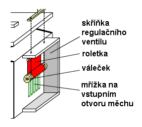Svislý pohyb válečku způsobuje její rozvinutí či svinutí na mřížku, přes kterou proudí vzduch. Mřížka (svislá žebra) slouží pro měkkou roletku jako opora, vzhledem k dost velkému průřezu kanálu pro přívod vzduchu od ventilátoru do měchu by se jinak tlakem vzduchu prohýbala a netěsnila by). Na krajích válečku s roletkou jsou vysoustruženy drážky, ve kterých jsou navinuty šňůry, na nichž je váleček zavěšen v komoře regulačního ventilu. Směr návinu roletky a šňůr je opačný, odvíjí-li se šňůra z válečku, roleta se navíjí a naopak. Šňůry procházejí těsně dvojicí otvorů v horním víku regulátoru a jsou zavěšeny na společné liště (vahadlu). Tato lišta je spojena lankem, procházejícím přes jednu či dvě kladky, s horním víkem měchu. Kladky slouží jednak k vedení lanka, jednak k obracení směru pohybu (při zvedání víka měchu roletka klesá a naopak): |
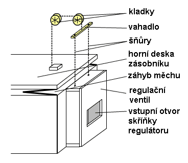
Regulační funkce roletkového ventilu je obdobná, jako u ventilu se zásuvkou. Zvedající se víko měchu způsobí spouštění vahadla se šňůrkami, ty se navíjejí na váleček, který klesá v komoře ventilu a rozvíjí roletku na povrch mřížky, čímž ji postupně uzavírá. Přes zmenšený průřez se do měchu dostává z ventilátoru menší množství vzduchu. Pokud odběr stoupne a víko měchu opět poklesne, šňůry se z válečku odvinou, roleta naopak navine a otvor pro vzduch zvětší. Po čase opět dojde k rovnováze mezi polohou víka měchu (otevřením ventilu) a množstvím vzduchu, procházejícím přes celý systém (ventilátor – regulátor – měch – spotřeba). Stejně jako u regulačního ventilu se zásuvkou i zde vystupuje zpětná vazba, tvořená mechanickým propojením víka měchu s válečkem roletky. Zajišťuje dodržení závislosti velikosti plnícího otvoru a množství vzduchu v zásobníku - čím je zásobník plnější, tím je otvor pro jeho další plnění menší (až nulový) a naopak. Obdobně jako v předchozím případě i u roletkového ventilu je nutný další zpětný ventil, který bude bránit úniku vzduchu z měchu přes vypnutý ventilátor. Tento ventil umožní nejen manuální plnění zásobníku čerpacím měchem ale rovněž chrání roletku regulátoru před deformací (případně poškozením) zpětným tlakem. |
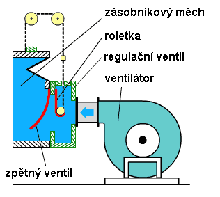
Konstrukce regulačního ventilu s roletkou je, jak
je patrné z popisu i animací, složitější, než konstrukce s pohyblivou
clonou či zásuvkou, výhodou jsou však podstatně menší rozměry, potřebné
pro zabudování na vzduchovod. Příklady konkrétního vzhledu regulační skříňky
ukazují následující fotografie: |
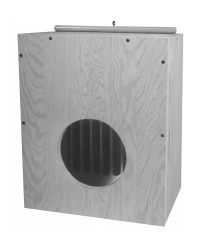 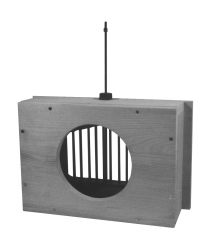
|
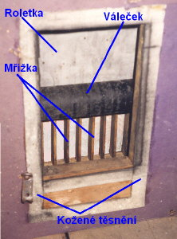Tato fotografie ukazuje pohled do vstupního otvoru regulační záklopky s roletkou. Vzduchovod od ventilátoru je odmontován, váleček s roletkou je spuštěn do přibližně střední polohy. Roletka je v tomto případě vyrobena z pogumované tkaniny (jedná strana bílá, druhá černá). Za mřížkou je zpětná klapka ze stejného materiálu, která v klidu zakrývá otvor do zásobníku. Těsnost připojení kanálu vzduchovodu zajišťuje kožené těsnění (bílé pásky okolo otvoru regulátoru). |
|
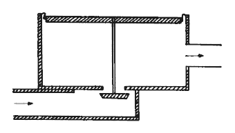U plovákového měchu je možné i pevné spojení plováku s regulačním ventilem ve dně zásobníku. S výhodou se zde využije faktu, že plovák se pohubuje ve svislém směru jen v omezeném rozsahu (několika centimetrů), což právě stačí k přímému otevírání ventilu ve tvaru klapky: |
S problematikou ventilátoru jako zdroje stlačeného vzduchu pro varhany souvisí i řešení regulace, zajišťující v jednom nástroji napájení spotřebičů vyžadujících různé tlaky vzduchu. Jak již bylo řečeno v popisu vzduchového hospodářství a měchů, zdrojem vzduchu o stabilním tlaku je zásobník (měch). Hodnota tlaku je určena silou, působící na jeho horní desku, která odpovídá tíze závaží nebo tlaku či tahu pružin na ni působící. Nic tedy nebrání tomu, aby ventilátor o dostatečném výkonu čerpal vzduch do několika měchů se samostatnými regulátory, které se budou lišit hodnotami závaží a tím i velikostmi tlaků vzduchu: |
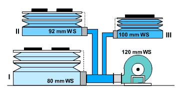
V tomto příkladě ventilátor vytváří tlak 120 mm WS (vodního sloupce). Tento vzduch je veden kanály do tří měchů, označených I, II a III. Každý měch má svůj regulační ventil a různě zatíženou horní desku. Získáme tak tři nezávislé zdroje vzduchu s rozdílnými tlaky, použitelné např. pro napájení různých strojů varhan (manuálů či pedálu) a pneumatických zařízení (traktury). Ventilátor samozřejmě musí být zvolen tak, aby množství vzduchu, které je schopen dodat bylo větší, než je součet spotřeby všech tří měchů a současně jeho výstupní tlak byl i při maximálním odběru s rezervou vyšší, než je nejvyšší použitý tlak v soustavě měchů. Všimněme si rovněž způsobu připojení měchů II a III k hlavnímu vzduchovému kanálu – vedení je oddělené, což umožňuje např. použití tramola pro každý z těchto měchů odděleně, aniž by kolísání tlaku v jednom z měchů ovlivňovalo druhý. Ve velkých nástrojích (se třemi a více manuály a více než cca 6 tisíci píšťalami) se používá několika samostatných ventilátorů, které napájejí měchy s odlišnými tlaky bez jejich vzájemného propojení. |
Na souvisejících stránkách o vzduchovém
hospodářství varhan naleznete popis jednodílných
a dvoudílných měchů. V samostatné
kapitole pak popis tremola. |
Poznámka: Tato stránka je součástí Anatomie varhan ®, © Ing. Petr Bernat. Všechny animace © Konrad Zacharski
 Na
této fotografii je pohled na část vzduchového hospodářství varhan. Vzduch
je přiváděn od ventilátoru vzduchovodem (tmavě fialovým dole) zprava
na regulační záklopku (s roletkou, ze skříňky vycházejí dvě šňůry spojené
vahadlem, ze kterého pokračuje jedna šňůra na kladku). Za regulátorem
je vidět měch (modrý s bílými koženými pásky v pohyblivých spojích,
jeho horní deska je žlutá a víko čevené). Z měchu jdou směrem nahoru
ke vzdušnicím dva vzduchovody (větší s amortizátorem k hlavnímu stroji
a menší k pedálovému), třetí k části vzdušnice pedálu vychází ze skříně
měchu vodorovně).
Na
této fotografii je pohled na část vzduchového hospodářství varhan. Vzduch
je přiváděn od ventilátoru vzduchovodem (tmavě fialovým dole) zprava
na regulační záklopku (s roletkou, ze skříňky vycházejí dvě šňůry spojené
vahadlem, ze kterého pokračuje jedna šňůra na kladku). Za regulátorem
je vidět měch (modrý s bílými koženými pásky v pohyblivých spojích,
jeho horní deska je žlutá a víko čevené). Z měchu jdou směrem nahoru
ke vzdušnicím dva vzduchovody (větší s amortizátorem k hlavnímu stroji
a menší k pedálovému), třetí k části vzdušnice pedálu vychází ze skříně
měchu vodorovně).